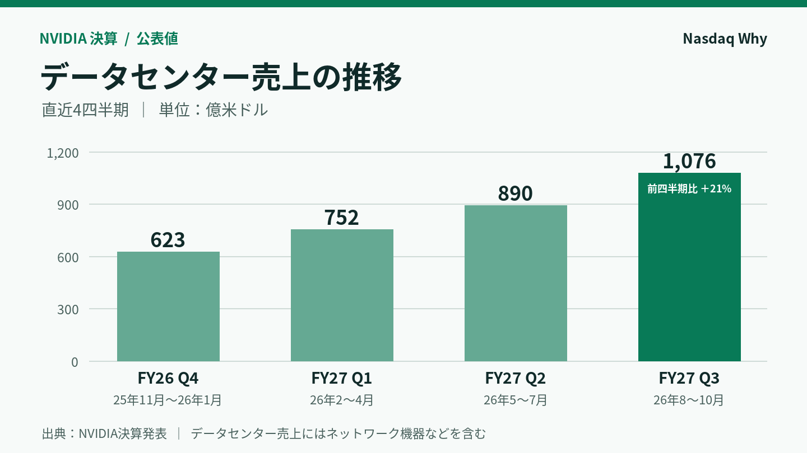
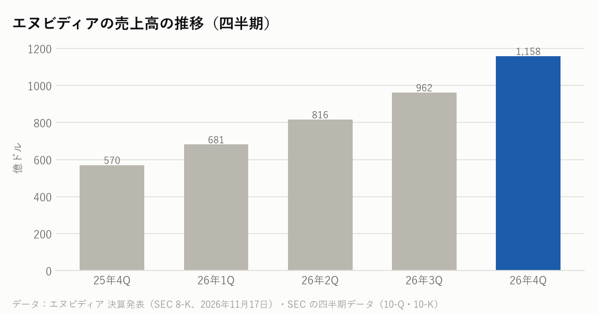
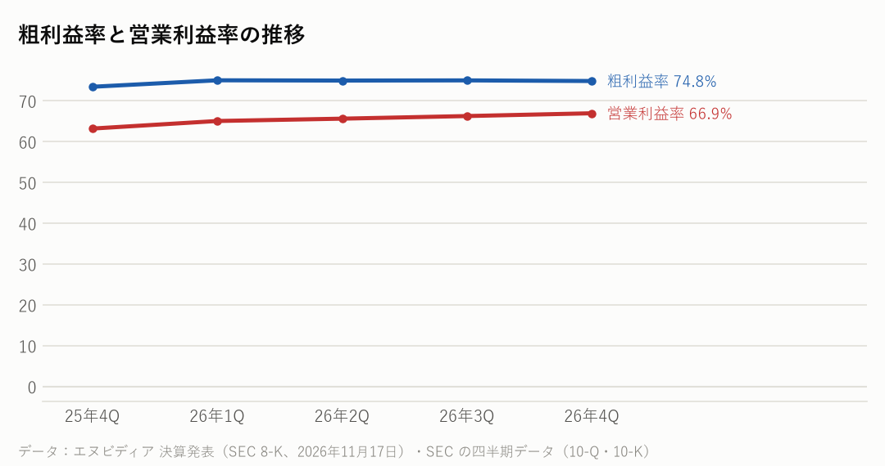
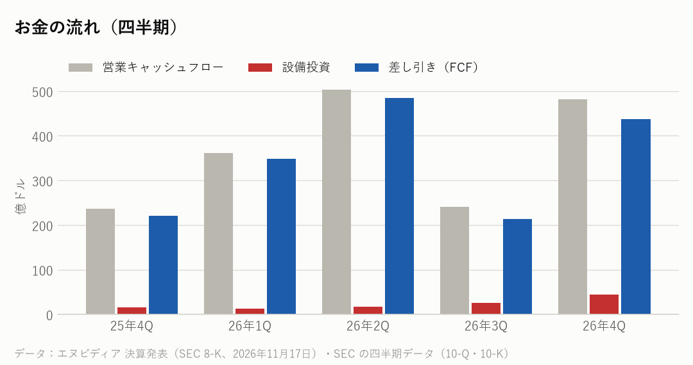
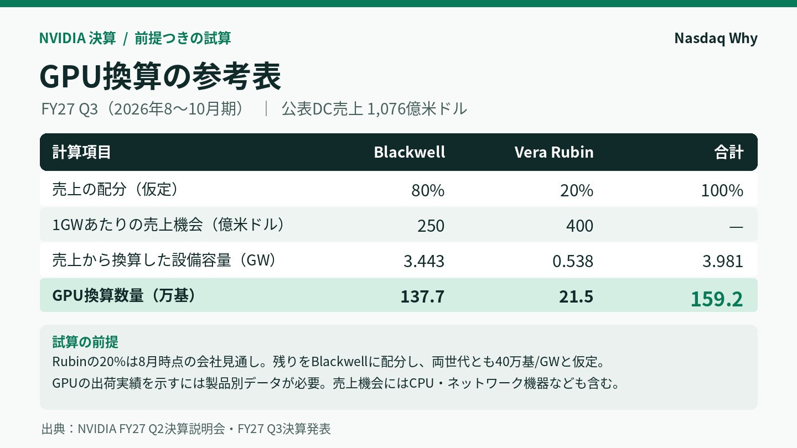

NVDA｜2026年8〜10月期（2027年度第3四半期）の決算｜決算発表 2026年11月17日（米国時間、取引終了後）
エヌビディアの決算：社長が辞めた直後の決算。売上は2倍なのに、なぜ利益率の見通しは下がる？
AI用の半導体（GPU）最大手のエヌビディアの8〜10月期は、売上が前年同期比103%増の1,158億ドルと、ほぼ2倍になった。営業利益は775億ドル（営業利益率67%）。ジェンスン・フアン氏が11月11日に社長（CEO）を辞めてから、初めての決算になる。次の11〜1月期の売上は1,300億ドルと、さらに増える見通しを出した。一方、粗利益率は74.8%から71〜72%に下がる見通し。データセンター向けGPUのシェアは約9割（2024年、IoT Analytics の推計）で、世界1位。

主な数字（2026年8〜10月期（2027年度第3四半期））
| 今回 | 前年同期 | 前年比 | |
|---|---|---|---|
| 売上高 | 1,158億ドル | 570億ドル | +103.2% |
| 営業利益 | 775億ドル | 360億ドル | +115.3% |
| 営業利益率 | 66.9% | 63.2% | |
| 純利益 | 653億ドル | 319億ドル | +104.6% |
8〜10月期の部門別の売上
| 部門 | 売上 | 前年同期比 |
|---|---|---|
| データセンター | 1,076億ドル | +110.0% |
| エッジ（PC・ロボット・車） | 82億ドル | +42.0% |

会社の見通し（11〜1月期）
| 売上 | 1,300億ドル（±3%） |
|---|---|
| 粗利益率 | 71〜72%（今回74.8%） |
| 中国 | DC向けの計算用は0で計算 |
| 注意 | 1週間多い四半期 |
- 11〜1月期の売上は1,300億ドル（±3%）の見通し。市場の予想（約1,253億ドル、報道）を上回る。ただし、この四半期はいつもより1週間長い。
- 粗利益率は71〜72%に下がる見通し（今回は74.8%）。
- 中国向けのデータセンターの計算用チップの売上は、見通しに入れていない（0として計算）。
もうけの力

お金の状況

AI半導体の同業（AMD・ブロードコム）と比べると
期間は会社ごとに違う：エヌビディアは2026年8〜10月、AMDは7〜9月、ブロードコムは5〜8月（8月2日まで）。各社の決算発表から。
| 会社 | 売上高 | 前年比 | 利益率 |
|---|---|---|---|
| エヌビディア | 1,158億ドル | +103% | 67% |
| データセンター | 1,076億ドル | +110% | — |
| AMD（DC部門） | 85億ドル | +97% | — |
| AVGO（AI半導体） | 167億ドル | +221% | — |
利益率はエヌビディア全体の営業利益率。AMD は「データセンター部門」で、AIの計算用チップ（GPU）のほかサーバー用のCPUも入る。ブロードコムは「AI半導体」の売上で、グーグルなど向けの専用チップ（ASIC）とネットワーク用のチップが中心。エヌビディアのデータセンターには、GPU・ネットワーク機器・ソフトが入る。期間が1〜3か月ずれているので、伸び率は目安。部門ごとの利益率は各社とも出していない。
NasdaqWhy の視点：データから読み取れる注目点
決算資料と各社の公式データを並べて読み取れることです。将来を予想するものではありません。
- 【なぜ売上が2倍になったか】売上の93%をしめるデータセンター部門が1,076億ドル（+110%）。前の四半期（5〜7月）と比べても+21%伸びた。新しいAI用の計算機「Vera Rubin NVL72」の出荷を始め、会社は「会社の歴史で最も速い立ち上がり」と説明している。CoreWeave・グーグル・マイクロソフト・オラクルなどのクラウドで動き始めた。売上は市場の予想（約1,088億ドル、報道）も大きく上回った。
- 【なぜ利益率の見通しは下がるのか】粗利益率は、今回の74.8%から11〜1月期は71〜72%に下がる見通し。会社は8月の決算説明会で、この下がり方をすでに示しており、理由の一部に「メモリーの値上がり」を挙げていた（CNBC の報道）。AI用のGPUには、SK hynix・サムスン・マイクロンの高性能メモリー（HBM）を大量に使う。会社自身も「メモリー不足は、AIの設備づくりそのものが大きな原因」と説明している。売上は伸びても、仕入れの値上がりで1ドルあたりのもうけは少し減る。
- 【なぜ純利益の伸びは小さく見えるか】純利益は653億ドルで、前の四半期より+9%にとどまり、営業利益の+22%より小さい。前の四半期には、持っている会社の株の値上がり益が78億ドル入っていたため（今回は18億ドル）。本業のもうけ（営業利益）は順調に伸びている。
- 【社長交代】会社は11月12日、フアン氏が社長と取締役を辞めたと発表した。理由は発表していない。最高財務責任者（CFO）のコレット・クレス氏が、CFOのまま暫定の社長になった。取締役会は社内・社外から次の社長を探している。決算発表の注意書きには、取締役会の独立した委員会による調査が続いていることも書かれている。クレス氏は「Vera Rubin は爆発的なスタートを切り、製品の計画も予定どおり」とコメントした。
- 【お金の流れ】8〜10月期の営業キャッシュフローは483億ドル、設備投資は44億ドルで、フリーキャッシュフローは438億ドル。自社株買いと配当で281億ドルを株主に返した。自社株買いの枠は、まだ2,273億ドル残っている。一方、在庫は397億ドル（1月末は214億ドル）、長期の借入金は324億ドル（1月末は75億ドル）に増えている。
- 【説明会①：中国】クレス氏は説明会で、許可を得て出荷していた旧世代のデータセンター用チップ（Hopper）の中国向け出荷を、もうやめたと説明した。8〜10月期の中国向けは24億ドルだった。米商務省が今週出した新しい輸出規制については、需要が供給を大きく上回っているので業績は強いままと見ている。
- 【説明会②：AI向けクラウド会社への資金支援（循環取引の心配）】エヌビディアは、客のデータセンターづくりに最大1,180億ドルの保証をつけている（うち1,050億ドルはOpenAI向けのオハイオの施設）。保証は建物が完成した分から順に効力を持ち、これまで支払ったことはない。説明会では「新しい約束ではない、何も変えていない」と説明しつつ、今後の資金支援は土地・電力・建屋がそろった会社を中心に選ぶとした。
- 【説明会③：足りないチップはどの客に先に出すか】需要が供給を上回るなか、出荷先はデータセンターの建屋と電力、資金、発注書がそろっているかで決めると説明した。値段は客によって変えていないという。大手AIラボ（フロンティアラボ）は、今年のデータセンター売上の約15%の見込み。
- 【説明会④：粗利益率と来年度】粗利益率は11〜1月期が底で、2028年度（2027年2月〜2028年1月ごろ）は72〜73%に戻る見通しを据え置いた。受け取り済みの注文の値段を守ってコスト増を一部かぶったためで、新しい年度から値段を見直す。2028年度の売上は、前回の約70%増から約75%増に見通しを引き上げた。
- 【Vera Rubinの立ち上がり】8月に量産出荷を始めた新しい計算機Vera Rubinは、最初の四半期で200億ドル弱を売り上げた（説明会）。データセンター売上の約2割で、8月時点の会社の見通し（約2割）とほぼ同じ。
- 【GPUは何個売れた？】エヌビディアはGPUの出荷数量も販売価格も公表していない。会社が説明した世代別の「1GWあたりの売上機会」（Blackwell約250億ドル、Rubin約400億ドル）で売上を分け、1GWあたりGPU40万基と仮定して試算すると、8〜10月期はGPU換算で約159万基になる。ただしこれは前提を置いた計算例で、出荷実績ではない。
- 【同業と比べると】AMD のデータセンター部門（7〜9月）は85億ドル（+97%）、ブロードコムのAI半導体（5〜8月）は167億ドル（+221%）。伸び率では負けない会社もあるが、金額ではエヌビディアのデータセンターが AMD の約13倍ある。グーグルなどが自分で設計する専用チップ（ブロードコムが作る）が、どこまでGPUの代わりになるかが今後の焦点。
- その他：Hugging Face（AIモデルの共有サイト）の買収で合意。オーストラリアで最大2ギガワットのAIの設備づくりにかかわる。
参考：GPU換算の試算（2026年8〜10月期・前提つき）

8月時点の会社見通し（Rubinがデータセンター売上の約2割）を使い、残り8割をBlackwellと仮定して売上を分ける。それぞれを会社の説明した1GWあたりの売上機会（Blackwell約250億ドル、Rubin約400億ドル）で割ると、設備容量に換算して約3.98GW。1GWあたりGPU40万基と仮定すると約159万基になる。説明会で示されたRubinの実際の売上（200億ドル弱）を使っても約160万基で、ほぼ同じ。
※NVIDIAの公表値はDC売上のみ。GPU換算数量は、会社が説明した世代別の「1GWあたり売上機会」と、仮定したGPU密度（40万基/GW）から出した計算例で、出荷実績ではありません。売上機会にはCPUやネットワーク機器なども含まれます。
次に確認したい決算・予定
- 次の社長がだれになるか、取締役会の調査の結果。
- 説明会の公式の書き起こしと10-Q（今回は「今後数週間のうちに」提出）：大口の客の割合、出資の約束、地域別の売上などで特筆すべき点があれば、アップデート記事にする。
- マイクロン（12月中旬〜下旬）の決算と、SK hynix・サムスン電子（2027年1月下旬）の決算：メモリーの値上げが続くか。エヌビディアの粗利益率に直接効く。
- エヌビディアの次の決算（2027年2月下旬の見込み）：粗利益率が71〜72%で底を打つか。Vera Rubin の出荷の増え方。
関連リンク
出典：エヌビディア 2027年度第3四半期の決算発表（2026年11月17日、SEC 8-K）・社長交代の発表（2026年11月12日、8-K）・SEC の四半期データ（10-Q・10-K）。市場予想と時間外の株価は報道（Decrypt・BigGo Finance）。粗利益率が下がる理由は8月の決算説明会（CNBC の報道）。同業は AMD（11月3日）・ブロードコム（9月2日）の決算発表。シェアは調査会社 IoT Analytics の推計（2024年）。説明会の内容は外部サイトの書き起こし（The Singju Post、StockAnalysis など）と報道による（公式の書き起こしは未公表）。
📝 note でも読めます（図つき・まとめ）：note.com/nasdaqwhy